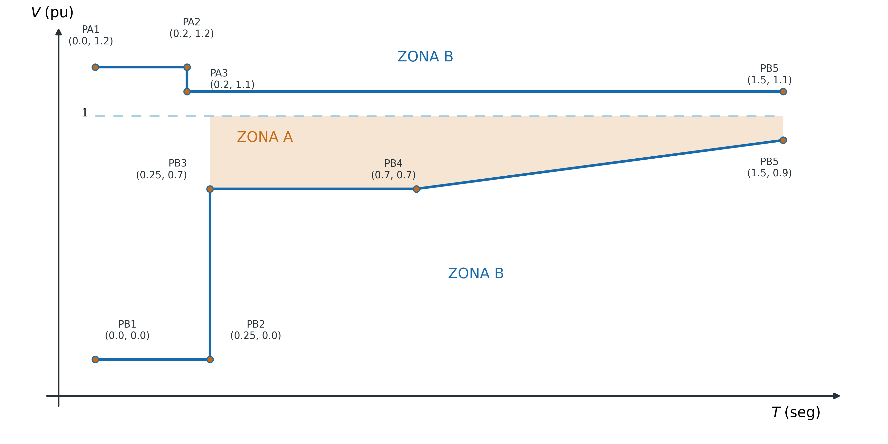
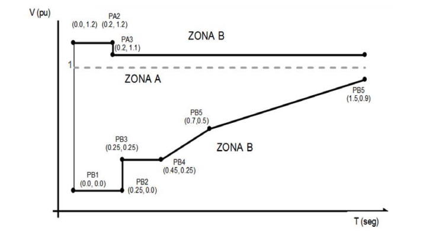
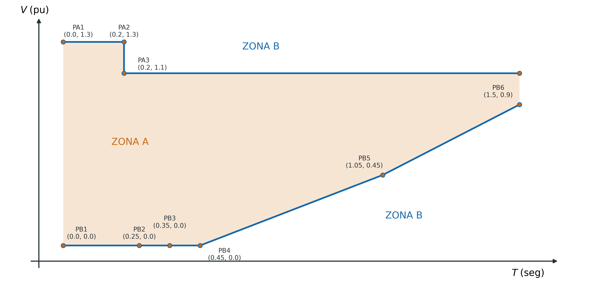

Capítulo 4. Requerimientos de control de tensión en condiciones dinámicas o de falla
El Capítulo 4 define la Zona A — el perfil tensión-tiempo que la Central Eléctrica debe tolerar sin desconectarse durante y después de una falla en la red. Establece curvas distintas para Centrales Síncronas y Asíncronas, y endurece la Zona A para las Centrales tipo D, que tienen mayor impacto sistémico. También cubre la recuperación de potencia activa post-falla y los requerimientos de corriente de cortocircuito.
4.1Requerimientos Generales — Centrales Eléctricas Tipo B y C
4.1.1 Respuesta ante Fallas — CE Síncrona Tipo B y C
La Central Eléctrica tipo B o C debe permanecer interconectada y en operación estable mientras la tensión permanezca dentro la zona permitida (Zona A) mostrada en la Figura 4.1.1.A (Tabla 4.1.1.A), para Síncrona. RES/550/2021, Manual INTE, Cap. 4 4.1.1.i — DOF 31-dic-2021 · PDF p. 230

4.1.1 Respuesta ante Fallas — CE Asíncrona Tipo B y C
| Punto | t [s] | V [pu] |
|---|---|---|
| PB1 | 0.00 | 0.00 |
| PB2 | 0.40 | 0.00 |
| PB3 | 0.55 | 0.35 |
| PB4 | 0.70 | 0.70 |
| PB5 | 1.50 | 0.90 |
| PA1 | 0.00 | 1.30 |
| PA2 | 0.20 | 1.30 |
| PA3 | 0.20 | 1.10 |
La asíncrona B/C tolera una falla bolted más larga (0.40 s vs 0.25 s síncronas) pero su HVRT es más permisivo (1.30 pu vs 1.20 pu). El período de recuperación en el segmento PB2→PB3 es más gradual (V crece de 0 a 0.35 pu en 0.15 s).
4.1.2 Recuperación de Potencia Activa Post-Falla — Tipos B y C
La Central Eléctrica tipo B y C deberá contar con equipo de control para ajustar los tiempos y rampas para la entrega de potencia activa post falla. El CENACE especificará durante la VRT: A. El comienzo de la entrega de potencia activa; B. La magnitud y precisión; C. El tiempo máximo permitido. RES/550/2021, Manual INTE, Cap. 4 4.1.2 — DOF 31-dic-2021 · PDF p. 231-232
Para las CE Asíncronas (eólicas, fotovoltaicas con inversor), el 4.1.2.ii establece un plazo explícito: la recuperación de potencia activa hasta el valor pre-falla debe lograrse en 0.25 a 0.5 segundos (sujeto a condiciones ambientales). Esto es posible gracias al control de los inversores de potencia, que pueden restablecer la inyección de corriente en milisegundos una vez que la tensión se normaliza.
4.1.3 Estabilidad en Estado Estable — Tipos B y C
En caso de oscilaciones de potencia, la Central Eléctrica tipo B o C debe mantener la estabilidad de estado estable cuando opere en cualquier punto operativo de la Curva de Capabilidad; y debe permanecer interconectada a la red y funcionar sin reducción de potencia, siempre que la tensión y la frecuencia permanezcan dentro de los límites permanentes de las Tablas 3.1.1 y 2.1 respectivamente. RES/550/2021, Manual INTE, Cap. 4 4.1.3 — DOF 31-dic-2021 · PDF p. 232
Este requerimiento implica que la CE debe estar equipada con un Estabilizador de Potencia del Sistema (PSS) o equivalente cuando las oscilaciones inter-área del SEN lo demanden —conforme a los 6.1.6.C que requiere modelar el PSS/POD como submodelo C de los modelos de simulación.
4.1.4 Capacidad de Aportación de Corriente — Tipos B y C
| Tipo de CE | Capacidad requerida |
|---|---|
| CE Síncrona tipo B o C (V > 69 kV) | Corriente de cortocircuito > 2 × In ante fallas cercanas al PI |
| CE Asíncrona tipo B o C (V > 69 kV) | Corriente de cortocircuito ≥ corriente pre-falla respecto a Pref |
Para las Centrales Síncronas, el factor de 2×In está relacionado con la reactancia subtransitoria (X"d): una máquina con X"d = 0.15 pu puede entregar ~6.7×In ante un cortocircuito próximo, por lo que el requerimiento de 2×In es habitualmente cumplido sin dificultad. Si la tecnología no lo permite económica y técnicamente, debe justificarse razonablemente ante el CENACE.
4.2Requerimientos Generales — Centrales Eléctricas Tipo D
Aplican los requerimientos del 4.1 para tipos B y C, excepto 4.1.1 (que se reemplaza por 4.2.1), más los siguientes. Los demás requerimientos (4.1.2–4.1.4) aplican íntegramente al tipo D.
4.2.1 Respuesta ante Fallas — CE Síncrona Tipo D

4.2.1 Respuesta ante Fallas — CE Asíncrona Tipo D

4.3Requerimientos Específicos — CE Síncrona Tipo D
4.3.1 Parámetros Eléctricos a Solicitud del CENACE
En virtud de los estudios que realice el CENACE, podrá solicitar a la Central Eléctrica requerimientos específicos (valores mínimos y máximos) de reactancia de las Unidades de la Central Eléctrica, reactancia del transformador, razón de corto circuito, así como otras variables que limiten la respuesta de la Central Eléctrica ante condiciones dinámicas o de falla que pongan en riesgo la estabilidad del sistema. RES/550/2021, Manual INTE, Cap. 4 4.3.1 — DOF 31-dic-2021 · PDF p. 234
El 4.3.1 es el más abierto del Capítulo 4: permite al CENACE requerir parámetros eléctricos específicos cuando los estudios de estabilidad del SEN los identifiquen como necesarios. Los parámetros típicos incluyen:
Ref.Comparativa Zona A — Tipos B/C vs D
| Característica | Síncrona B/C | Asíncrona B/C | Síncrona D | Asíncrona D |
|---|---|---|---|---|
| Duración máx. V = 0 pu (falla bolted) | 0.25 s | 0.40 s | 0.25 s | 0.45 s |
| V mínima en t = 0.25 s | 0.70 pu | — (aún V=0) | 0.25 pu | — (aún V=0) |
| V a t = 0.70 s | 0.70 pu | 0.70 pu | 0.50 pu | — (gradual) |
| V a t = 1.50 s | 0.90 pu | 0.90 pu | 0.90 pu | 0.90 pu |
| Límite HVRT máximo (inicial) | 1.20 pu | 1.30 pu | 1.20 pu | 1.30 pu |
| HVRT sostenido (t > 0.20 s) | 1.10 pu | 1.10 pu | 1.10 pu | 1.10 pu |
| Puntos PB en la curva LVRT | 5 | 5 | 6 | 6 |